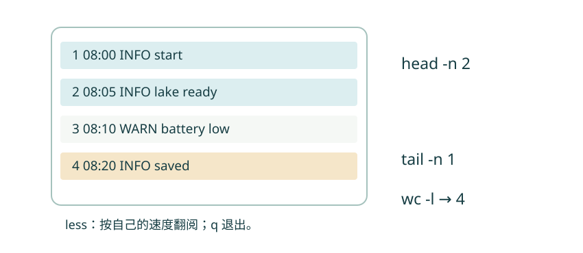

第 06 节 · 把文件安顿好
打开一份记录
一份长文件，怎样先看清它的大概？
选择 cat、head、tail、less；理解 wc 的计数单位。
本节目录
看文件之前，先想知道什么
起始位置是 ~/linux-lab。读三行笔记和读十万行日志，需要的视角不同。cat 适合短文件；head 看开头；tail 看末尾；less 让你在长文本中翻页。
日志像按时间记下的工作记录。本材料中的每一行依次写时间、级别和简短事件；这些字段约定来自我们的练习文件，并不是所有日志统一的格式。
图解 · 从不同的窗口看同一份文本

head 看开头，tail 看末尾，less 用于翻阅。wc -l 统计换行符；本例每行都有换行，得到 4。
放大查看 ↗ 保存 SVG ↓先看头尾，再数一数
head -n 2 logs/day-01.log
tail -n 1 logs/day-01.log
wc -l logs/day-01.log08:00 INFO start 08:05 INFO lake ready 08:20 INFO saved 4 logs/day-01.log
-n 2 在这里指定两行。wc -l 输出的数字旁边还有文件名。练习日志每行都以换行符结束，所以得到 4。
严格说，wc -l 数的是换行符。假如文件最后一行没有换行符，视觉上的最后一行可能不会被计入。遇到计数不一致时，这个区别很有用。
用 less 看得从容一点
less logs/day-01.log进入后，可以用方向键滚动，用空格向下翻页；输入 /WARN 再按回车查找 WARN，按 n 找下一个，按 q 退出。这个 q 是 less 内部的操作，不是在普通 Shell 提示符后单独执行的命令。
如果终端似乎“停在一个界面”，先观察自己是不是还在 less 里。不同程序有各自的操作方式。
行、词、字节，不是同一件事
单独的 wc 文件 通常依次显示行数、词数、字节数。wc -c 看字节数；在合适的字符编码环境下，wc -m 看字符数。中文字符在 UTF-8 中通常占多个字节，因此字节数不能直接叫“字数”。
另外，ls -l 显示的文件大小通常按字节计；它也不是文本的行数。我们后面会根据问题选择合适的计数方法。
动手试试
只读你需要的部分
用 head 查看 notes/morning.txt 第一行，用 tail 查看最后一行，再用 wc -l 检查这份笔记的行数。
给我一点提示
head 和 tail 都可以使用 -n 1。
查看参考解法与解释
head -n 1 notes/morning.txt 得到 Morning observation；tail -n 1 notes/morning.txt 得到 Birds: 12；wc -l notes/morning.txt 得到 3 行。
检查一下理解
wc -l 的直接含义是什么？
查看解释
wc -l 统计换行符。文本通常每行以换行结尾，此时它也就是行数。